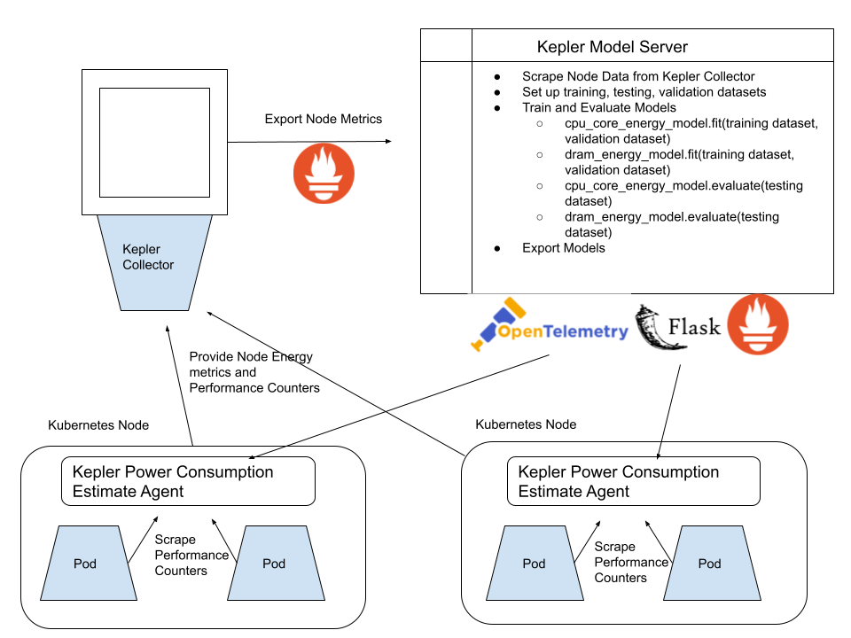

Overview
Kubernetes-based Efficient Power Level Exporter is a Prometheus exporter. It uses eBPF to probe CPU performance counters and Linux kernel tracepoints.
Kepler is lightweight because it uses eBPF thereby reducing it’s own power consumption while making measurements. Kepler collects data based on eBPF programs that attach to Linux tracepoints and performance counters to collect information such as process id, cgroup id, cpu cycles, cpu time, cpu instructions, cache misses etc. Kepler aggregrates this data in conjuction with other stats in the user space and exports these stats as Prometheus metrics. The Kepler Model server uses the Prometheus metrics to train ML models for estimating energy consumption by pods.
Kepler Power Consumption Estimate Agent
The agent runs as a daemonset on the nodes and exports the node energy metrics and the performance counters to the Kepler Collector.
Kepler Collector
The collector receives the stats from the agents, aggregrates them and then exports them as Prometheus metrics.
Kepler Model Server
Kepler uses regression model to estimate power consumption.
The Kepler Model Server scrapes the Prometheus metrics exported by Kepler to train models to establish relationship between energy consumption by pods and the software stats.
At present the Kepler Model Server trains two linear regression models:
Core Energy Consumption Model and
DRAM Energy Consumption Model
Read more about Kepler Model Server here